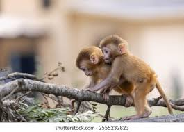

La reproduction des singes
Les singes on une facon de se reproduire assez similaire aux hommes
La reproduction des singes
- - La reproduction des singes est sexuelle, mais il y a des variations notable selon les espèces.
- - Les singes femelles atteigne la majorité sexuelle plus tot que les males.
- - La reproduction des singes nécessite l'accouplement et les femelles donnent naissance a un seul petit a la fois.
- - Chez les singes, on remarque la majorité sexuelle souvent par des traits physique.
